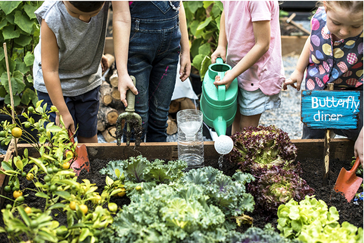

RootRevolution
®
Home
Seed Map
About
Your SeedFeed
Your Community in Provo
Neighborhood Veggie Garden

Carrot garden for Provo Elderly Care Center
Sarah's Planting Club
Recently Viewed
Saved Campaign 1
Saved Campaign 2
Saved Campaign 3
Saved
Neighborhood Veggie Garden
Carrot garden for Provo Elderly Care Center
Sarah's Planting Club
Seeds you may have
[Tomato] 1000 Tomato seeds for local Elementary School
[Pepper] 50,000 Pepper seeds to feed Town after natural disaster
[Carrot] Carrot garden for Elderly Care Center
[Rose] 911 Rose seeds for 9/11 community memorial flowerbed